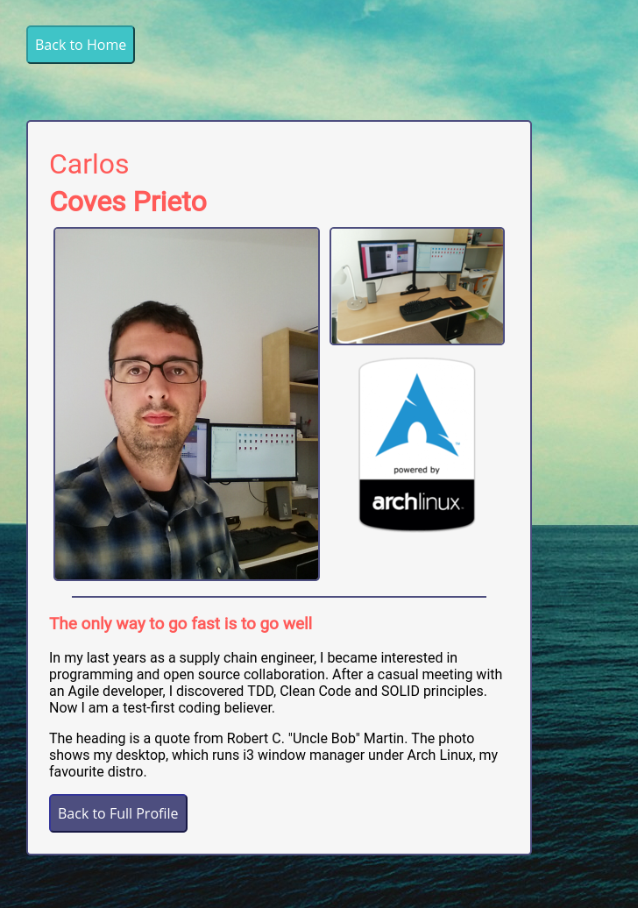
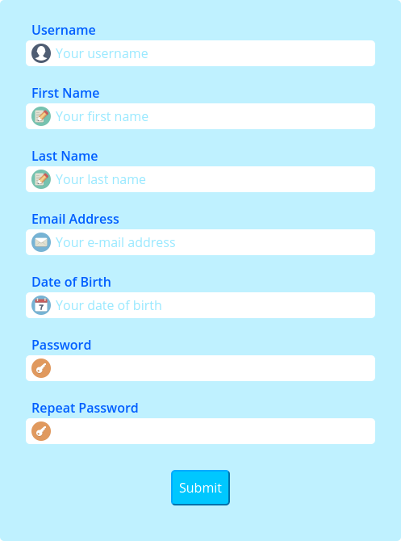
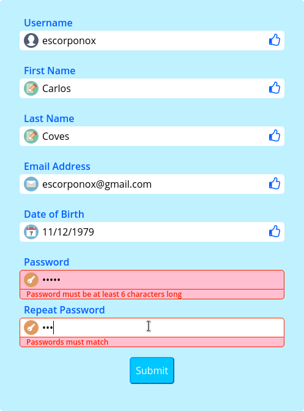
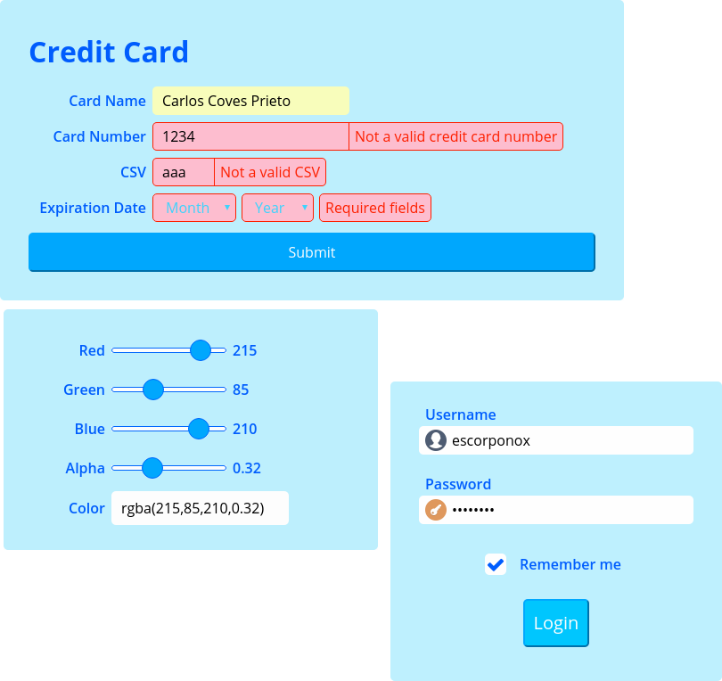
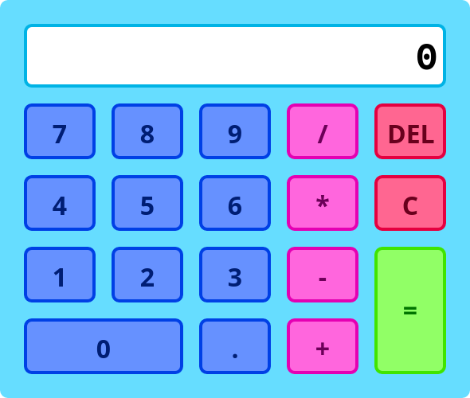
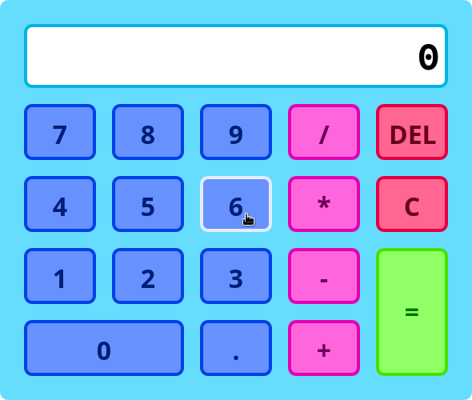
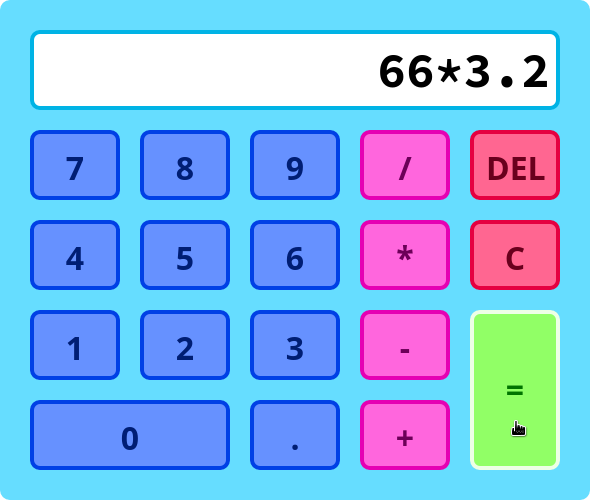
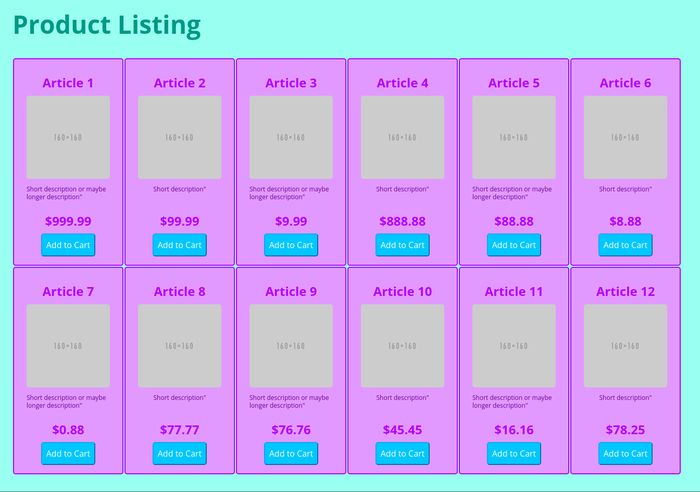
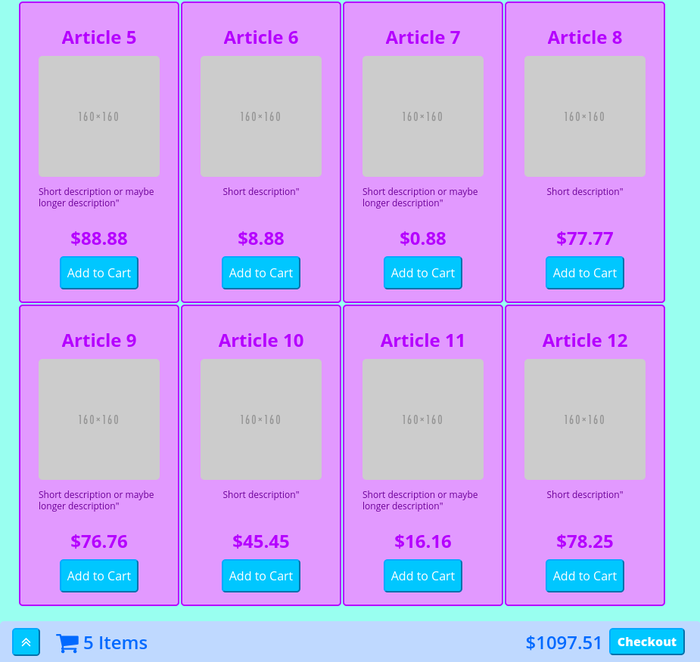
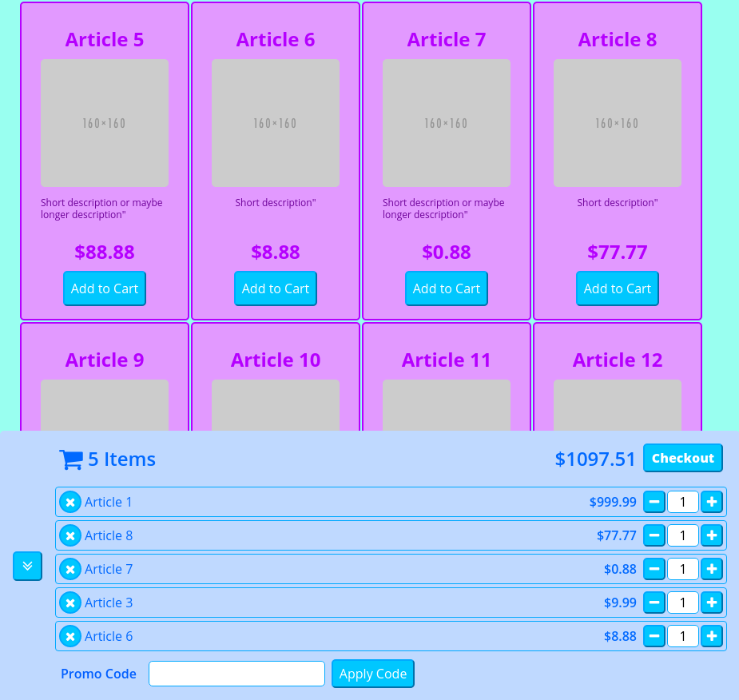

Projects
This projects have been done while going through my path to become a Modern Frontend Developer. Building them from scratch has helped me to develop a solid HTML5 and CSS3 basis.

TECHNOLOGIES: HTML5, CSS3
This is a sidebar built for Modern Developer social media



Technologies: HTML5, CSS3, and Vanilla JavaScript
Several forms built with custom design and using the modern validators API



Technologies: HTML5, CSS3, and Vanilla JavaScript
Basic calculator with a flashy color palette to attract kids attention



Technologies: HTML5, CSS3, and Vanilla JavaScript
Simple shopping cart with a daring color palette